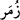
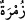
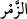
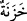
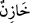
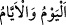

“ kelimesi, az sayıdaki topluluk anlamına gelen “nin çoğuludur. Ses
mânâsındaki “den türemiştir. Çünkü toplulukta mutlaka ses olur. Yâni kafirler,
hesap görüldükten sonra tarafımızdan basit bir emirle cehenneme sürüklenirler. Bu da
onların dalâlet ve kötülük tabakalarındaki yerlerine göre sıralanmış, bazısı bazısının
peşinde dağılmış gruplar hâlinde itile kakıla yapılır. Cehennem kendilerini, tıpkı onların
emir ve yasakları ve bunları kendilerine emredenleri ve yasaklayanları karşıladıkları
gibi abus çehreyle/asık suratla karşılar.
“Nihâyet oraya” zillet ve horluk sıfatını takınmış olarak cehenneme “geldikleri
zaman kapıları açılır,” Oraya vardıklarında Allah Teâlâ’nın “Onun (cehennemin) yedi
kapısı vardır” (el-Hicr, 15/44) buyurduğu üzere cehennemin yedi kapısı girmeleri için
açılır. Onların gelme vaktine kadar kapalı tutulmasının hikmeti, cehennemin ne denli
korkunç olduğunu göstermek ve sıcaklığını tutmaktır.
Es’iletü’l-hikem’de şöyle der: “Ateşlikler cehennemin kapılarını tıpkı zindan kapıları
gibi kapalı bulurlar. Onları küçük düşürmek ve kınamak için kapılar kendilerine açılana
kadar orada durup beklerler.
Fakir (Bursevî) der ki: Bu rûhânî azap kabîlindendir ki cismânî azaptan daha
şiddetlidir. Dolayısıyla kapıda bekletilmeleri, onlar için azâbın acele gelmesinden daha
iyi değildir. Çünkü onlar azâbın içindedirler. Kâfirin sıkıntı, dehşet ve zahmet
içerisindeki bekleyişinin uzayarak nihâyet: “Ya Rab! Ateşe atarak bile olsa beni
rahatlat!” diyecek olması da bunu destekler mâhiyettedir.
Burada yedi nefsânî kötü sıfata işâret edilmektedir: Bunlar kibir, cimrilik, hırs,
şehvet, hased, öfke ve kin. Çünkü bunlar cehennemin kapılarıdır. Cehenneme giren
herkes mutlaka bunlardan birinden girmektedir. Şu halde nefsi bunlardan tezkiye ve
tahliye etmek lâzımdır.
Cehennem “Bekçileri onlara:” paylamak, kınamak, elem ve acılarını artırmak için
“Size,” kendilerine kolayca başvurup dediklerini rahatlıkla anlayabileceğiniz birer
insan olarak “içinizden Rabbinizin” peygamberlere indirdiği “âyetlerini okuyan ve
bugüne” yâni şu vaktinize “kavuşacağınızı ihtar eden” sizi korkutan “peygamberler
gelmedi mi?” derler.”
“ kelimesi, hazineyi ve içinde bulunanları koruyan anlamındaki “ kelimesinin
çoğuludur. Burada kasdedilen cehennemi koruyan melekler ve cehennem zebânîleridir.
Onlar, cehenneme girecek olanlara azap etmekle görevlidirler.
Burada bahsedilen “bugün” kıyamet günü değil, ateşe girecekleri vakittir. Çünkü
buradaki izâfet özel olma/ihtisâs ifâde eder. Halbuki kıyamet günü kâfirlere özel
değildir. Kaldı ki bazen “ (bugün ve günler)” kelimelerinin sıkıntı zamanlarını
ifâde etmek için kullanılır. Bu sebeple de vakit anlamına hamledilirler.
Bu âyette kişiye şerîat tebliğ edilmeden azap edilmeyeceğine delil vardır. Çünkü
cehennem bekçileri, kınamalarını peygamberlerin gelmesi ve kitapların gönderilmesine
bağlamışlardır.